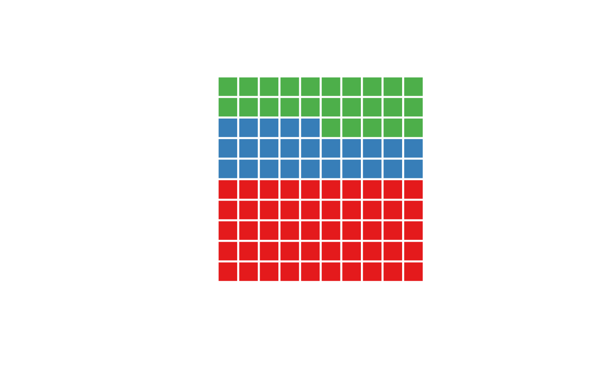
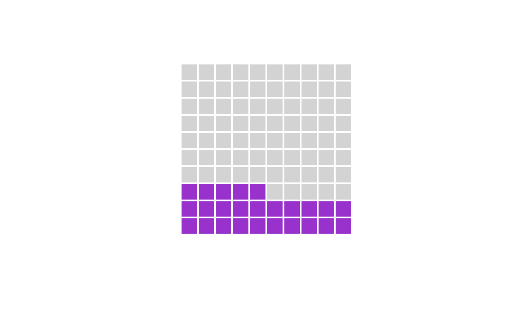
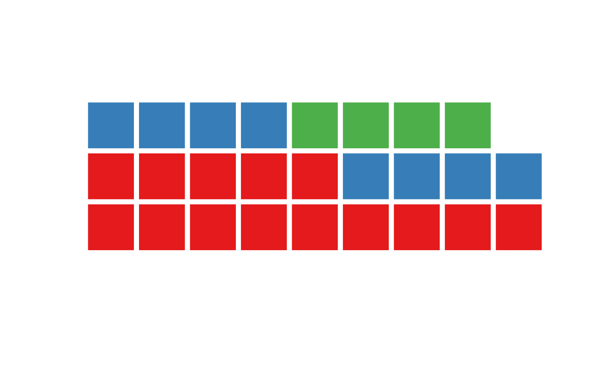
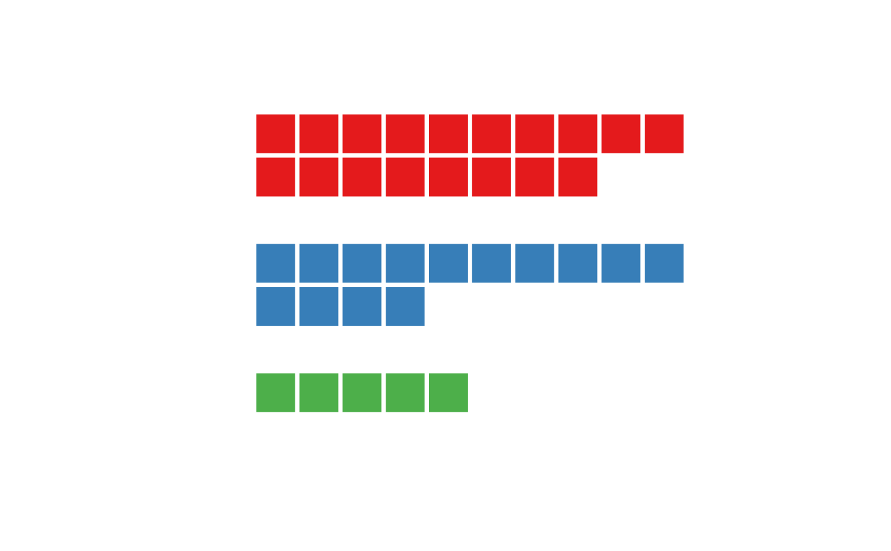

Waffle chart is a pie chart that visually represents abundances with the number of squares. The waffle chart consists of squares plotted on a rectangular lattice according to a design matrix that is constructed from a vector of abundances or can be provided directly.
Usage
waffle(
x,
f = NULL,
...,
nrow = NULL,
ncol = NULL,
byrow = TRUE,
from = "bottomleft",
stacked = TRUE,
gap = 0,
horiz = TRUE,
add = FALSE
)
waffle.mat(x, f = square, ..., add = FALSE)
design(
x,
nrow = NULL,
ncol = NULL,
byrow = TRUE,
from = "bottomleft",
stacked = TRUE,
horiz = TRUE,
gap = 0
)Arguments
- x
a vector of abundances or a design matrix (see details)
- f
**optional** a shape function (see details)
- ...
**optional** other parameters passed to the `f` function
- nrow
**optional** the number of rows
- ncol
**optional** the number of columns
- byrow
**optional** fill matrix by rows or by columns
- from
**optional** starting position from which the matrix is filled, one of "bottomleft", "bottomright", "topleft" or "topright".
- stacked
**optional** if FALSE, produce an unstacked waffle chart, see details
- gap
**optional** gap between unstacked subwaffles, works only for unstacked waffle charts
- horiz
**optional** if FALSE, vertical instead of horizontal waffle chart is produced, works only for unstacked waffle charts
- add
**optional** whether to add to a current plot
Value
`design()` returns a design matrix (see details), in addition, if `x` is a named vector, the names are preserved in the `levels` attribute. `waffle()` and `waffle.mat()` do not have a return value
Details
The `waffle()` function accepts a vector of abundances and plots a waffle chart. This is done by first constructing a design matrix using the `design()` function, which is then parsed to the `waffle.mat()` function.
The `design()` functions construct a design matrix according. The design matrix is filled by an integer vector derived from the abundance vector `x`. Each integer correspond to the order of abundances in `x`, with the quantity equal to the value in `x`. This means that for the `x=c(3,5)`, the design matrix will be filled with three `1` and five `2`, all other cells of the design matrix are set as unknown values `NA`.
By default, the design matrix is filled by row, starting from the bottom left corner, this can be changed by setting the variables `byrow` and `from`. By setting `byrow=FALSE`, the matrix is filled by columns first.
If `ncol` or `nrow` is not specified, a squared matrix that will fit the sum of abundances will be constructed.
By default, the design matrix is stacked, i.e., all the elements are placed in a single matrix object, similarly how barplot produces stacked lines. By specifying `stack=FALSE`, the `design()` unstacks the elements, each are then placed in their own matricies, which are then connected by `NA` elements of size `gap`. More complex
If the input vector `x` is a named vector, the names are preserved in the `levels` attribute. These levels are not currently used, but might be used in the future for automatic legend creation and subsetting.
The function `waffle.mat()` accepts a custom-made design matrix and thus allows a better control of colored regions. It is called internally by the `waffle()` function, which serves as an easy to use interface for the `waffle.mat()`. For this reason, the `waffle.mat()` does not checks for the validity of input arguments and does not set a default colors.
The assumed and allocated coordinate system is from `0` to `ncol` for x and from `0` to `ncol` for y. Squares are filled from top right corner of this coordinate system.
If `add=FALSE`, a new window with a fixed aspect ratio x/y=1 is allocated so that
plotted polygons are squares (by default). This might cause the plot margins,
and thus the main title, to be quite far away. In this case, plotting the title using `text()`
instead of `title()` might be a better idea. In this case, the coordinates might be:
text(x=(ncol+2)/2, y=nrow+1,...)
Examples
waffle(c(50,25,25))

waffle(c(25,75), col=c("darkorchid", "lightgray"))

waffle(c(14,8,4), nrow=3)

# custom design matrix with a more complex structure
cols = palette.colors(3, "Set 1")
design_mat = matrix(NA, 7,10)
design_mat[1,] = 1
design_mat[2,1:8] = 1
design_mat[4,] = 2
design_mat[5,1:4] = 2
design_mat[7,1:5] = 3
waffle.mat(design_mat, col=cols)
